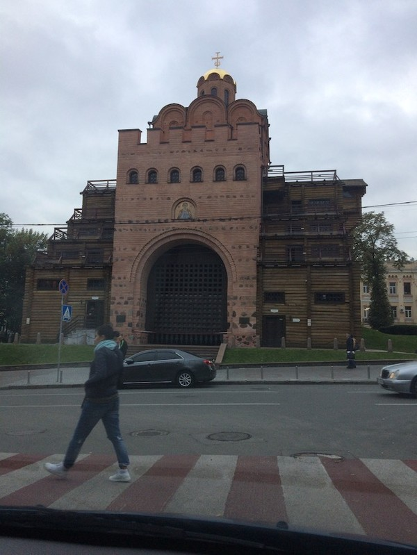
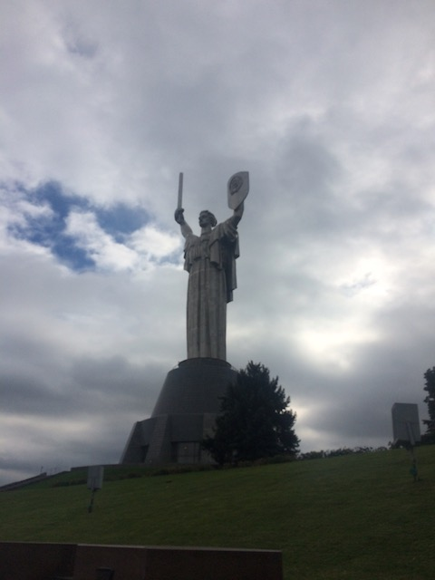
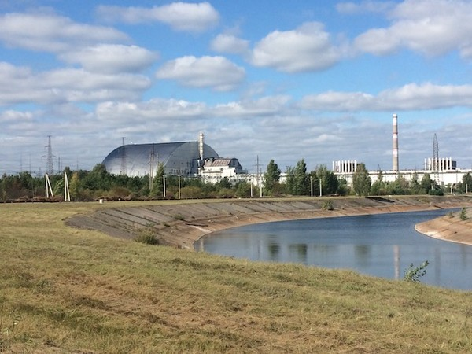
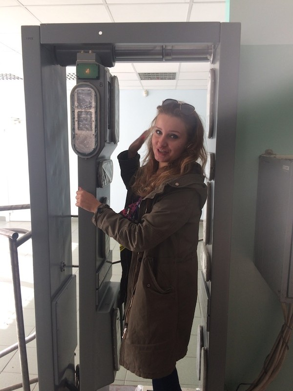
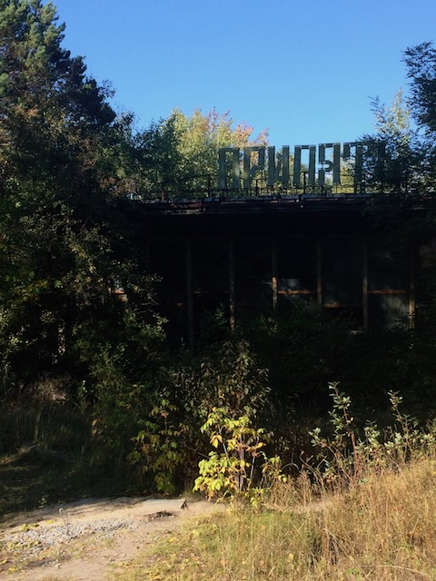
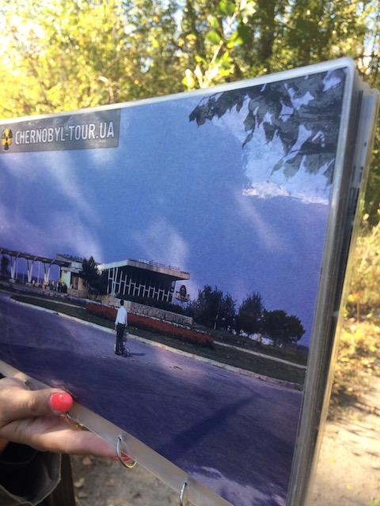
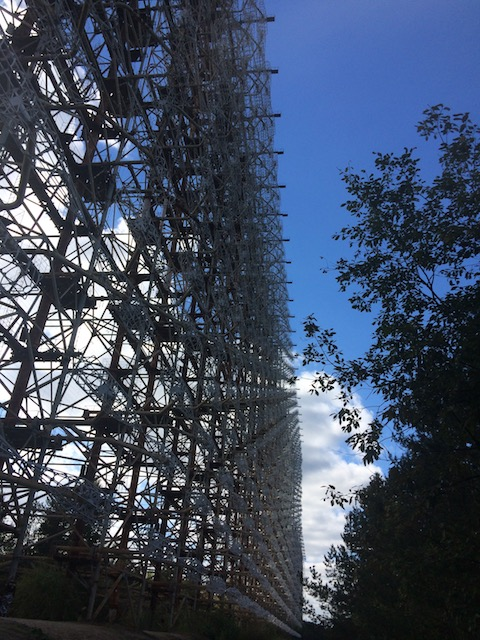

Resor · 2018-09-29 @ 15:40:07 Allmänt Permalink
Några dagar i Kiev
Äntligen fick jag titta förbi här, det känns helt rätt.
Som barn spelade jag klarinett i en orkester. En låt på vår repertoar var ”Great Gate of Kiev”, (Modest Mussorgsky). Pampigt och därmed långsamt, vilket jag antar underlättade för oss ungar. Titeln har på något vis hängt kvar i hjärnan men nu fick jag då se den. Lite antiklimax ärligt talat. Inte minst för att den är rekonstruerad och man vet inte riktigt hur den såg ut när den var "Great".

På väg från flyget, när jag som vanligt slår mig genom muren av dyra taxierbjudanden och tar bussen ner till city, ser jag de förbluffande höghusen, lika grå och kul som de Sovjet byggde runt Europa här och där. Ubrar mig till hotellet från bussen.
Hotellet ligger centralt, men i ett suspekt kvarter. Jag leds in i mörkret av en främmande man för att hitta hissen till tredje våningen. Man får stryka längs väggen för att hitta knappen. Rummet lika litet som sängen, wifi fungerar inte och det är en stor spegel på väggen bredvid sängen. Nåja. Jag har nattklubbarna med dess flickor i kaninöron utanför som dunkar fram musik hela natten under fönstret. Det är billigt…det är billigt… tänker jag då. För övrigt flickor i kaninöron som mycket riktigt på håll ser att jag inte är ett dugg intresserad och drar inte i mig som i andra män. Lite bra och samtidigt lite exkluderande.
Det slår mig mer påtagligt så här irl, att de faktiskt är i krig. Nu och då. De samexisterar med de som talar ryska, det verkar inte finnas en lokal ovilja mot dem som i en del östeuropeiska länder. Men släkt och vänner har farit illa eller dött i kriget i öst.
En skjutbaneinstruktör berättar att de värsta dårarna, som tröttnat på att illegalt jaga utrotningshotade djur, kommer till krigsområdena för att jaga människor. De skjuter vem som helst och det hamnar i den allmänna statistiken och skylls på de stridande parterna. En klump i magen växer och jag blir illamående igen, nu när jag skriver om det …
Med en privat guide åker jag runt stan och skummar ytan av sevärdheter.
https://kievprivatetours.jimdo.com
Det passar mig perfekt, är det ointressant kan jag trycka FastForward men stanna i detaljer där det är spännande.
De har alltid legat geografiskt bra till. Man har hittat mammutben och mammutjägare, 20.000 år gamla, vikingar (sägs) ha passerat på väg till svarta havet och Istanbul. Möjligen gav de namnet ”Rus’” till de östslaver som bodde här. Skrönor antyder kopplingar till Rurik, Roslagen, Ruotsi men jag har inte hört att det är annat än lösa hypoteser. När Kiev skövlades av mongolerna drog drottningen till Moskva och tog med sig namnet Ryssland. Därför säger ryssar i dag att deras vagga ligger i Kiev, vilket skrämmer med tanke på hur det gick med Krim.
Ett monument för broderskap mellan Ukraina och Ryssland, en skinande stor båge, sticker lite i ögonen och en del vill såga ner den. Andra menar att det är historia.
Ett ställe jag verkligen vill återvända till, är en utgrävning i ”Crowd Fund”-stil. De har hittat väldigt gamla ruiner men ingen vill finansiera utgrävningen, här: 50.459120, 30.525684
Nu är det en liten grupp som guidar ner i underjorden på ideell basis.
Så de tog törnar från Polen, Litauen, Ryssland. Införlivades i Sovjet och skövlades under andra världskriget. Jag har nog inte dragit den slutsatsen, att Hitler och Stalin gjorde upp till stor del på Ukrainas mark. Röda armén brände jorden och sen kom tyskarna med massavrättningar och deportation till förintelseläger. Var sjätte ukrainare dog. Men Sovjet byggde... monument, stora som frihetsgudinnan. Många. Och rev kyrkor.

En utställning vi besöker (I fundamentet till detta monument), visar täcken stoppade med människohår och handskar sydda av människoskinn. Så fruktansvärt påtagligt att se.
Men åter till mindre fasansfulla saker. Guiden bir upprörd över mitt Stockholmska sätt att nonchalera ’röd gubbe’ och strosa över sexfiliga väger mellan bilarna. Hon har nog rätt.
Borsh och små knyten (dumplings?) hjälper hon mig hitta men även en väldigt god hamburgare med ädelost.
Besöket vid Pripjat, Tjernobyl var intressant. Återigen, jag har aldrig riktigt placerat var det låg. Det var ju ”någonstans i Sovjet”.
http://www.chornobyl-tour.ua
Kärnkraftverket ligger i Ukraina på gränsen till Vitryssland. Eftersom vindarna var västliga och nordliga, drabbades det stängda Vitryssland hårdast av alla. Men i tysthet, än idag.


Den kontaminerade zonen är idag som ett laboratorium. Hur ska växter och djur bete sig? Vi ska se den ”Röda skogen”, där strålningsnivån är så pass hög att alla mätare i bilen börjar tjuta bara vi kör förbi, men den är inte så röd nu eftersom de träd som tvärdog 26/4 1986 har man grävt ner i marken. Inget att se alltså.
Den tomma staden Pripjat har blivit skog, fotbollsplanen är full av träd, husen skyms av all växtlighet. På bilder ser vi den sovjetiska drömstaden. De hade allt, som en målning i ”Vakttornet”. Där visades det sovjetiska systemet upp för besökare.


En gammal sovjetisk radarstation med en enorm antenn besöker vi. Den skulle se USAs missiler avfyras. Men triggades även av moln … tack vara en operatörs tveksamhet med att larma, undveks kärnvapenkrig en gång.

Med ’hög strålningsnivå’ menas att stå där 20 timmar så är det som en röntgenplåt.
Lite kortfattat. Men åk hit själv då! <3
Nu ska jag till Bangkok och hoppas få träffa Erik och Hardy. :)